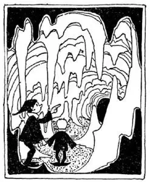

12
The Fountain of Youth
青春泉

BIRDS go south in the winter to get warm. Some people in the cold Northern States do the same. The farthest south they can go in the United States is to the corner State, shaped like a dog’s paw, called Florida, which means the land of flowers. On the automobiles that go to Florida you can read the tags of every one of the forty-eight States. People go to Florida in the winter to sit in the sunshine, to bathe in the sea in January, to get rid of shivers, sneezes, and handkerchiefs. It is a winter playground, as New England is a summer playground. I know a man who is supposed to live in Baltimore, but he spends his winters in Florida and his summers in New England, so he only lives in Baltimore a few weeks in between.
The first white people who came to America came to Florida, because they had been told there was a fountain of youth there. The fountain of youth was supposed to be a spring which was said to have magic powers. It was believed if old people bathed in it or drank its water they would become young again. But no one has ever found a fountain of youth in Florida or anywhere else, though many old people after they have spent the winter in Florida say they feel young again.
But not everybody in Florida plays all winter long. Many have to work. They have to run the hotels for the people who do come to Florida to play. And a great many others are busy raising “fresh early vegetables” to ship to the cold Northern States, where they would have only canned or frozen vegetables during the winter otherwise. Just as there is a top time, a kite time, a football time, and a baseball time, there used to be certain times or seasons for certain fruits and vegetables; but in most of Florida it is so warm they seldom or never have frost or snow or ice, so they can raise fruits and vegetables the year round. Farmers ship the vegetables they raise out of season to other States, so that people in the North can now have fresh strawberries at Christmas, and asparagus too, and lettuce and radishes every month in the year.
The chief fruits from Florida are oranges and grape-fruit, which will grow only where there is no frost. Grape-fruit grows in bunches like big, yellow grapes—that’s why it is called “grape”-fruit. Grape-fruit was at first thought not fit to eat—too bitter and not sweet like an orange; but people have learned to like it. More grape-fruit grows in Florida than in any other place i.t.w.W.
Once there was no Florida at all—the United States had no “paw” sticking out into the sea. It grew a paw and this is the way it grew it. The sea was warm and shallow and in the sea there lived millions, billions, trillions of little animals, each like a tiny drop of jelly with a tiny stony speck in the center, or a tiny stony shell on the outside, and millions and billions and trillions of these little sea animals died. As they died, millions, billions, trillions of these stony specks and shells fell to the bottom of the sea like a snowfall of chalk dust, and this piled up until the water was filled up. This stony, bony, chalky pile is Florida. On this kind of ground of which Florida is made plants grow very well indeed. In fact, this soft, chalky ground is so good for growing things that people dig it up and send it to other States to be put on the ground to make vegetables grow better.
Long, long years ago, before there were any people on the World, our whole country was at the bottom of the sea, and a great deal of our country was made under the sea just as Florida was made, from bones and shells of sea animals. This kind of bone and shell rock—for it is rock—is called limestone, because if you burn it it makes lime. Limestone is really bone-stone; stone made of the bones of sea animals. Then the earth wrinkled and crinkled and rose out of the water and formed our country. We know it was once under the sea because in many places now, high above the sea, even on mountain tops, we find this limestone with shells and bones of fish and other sea animals still showing in it. Marble, the most beautiful of all stone, is a kind of limestone, for it also is made of bone. People build houses and palaces of it and make statues and tombstones of marble or limestone.
Many of the people who go to Florida stop on their trip to see sights, and one of the greatest sights is in Virginia and Kentucky where the rock under the ground is all limestone. The “sights” are huge caves, and in Kentucky they are so large they are called Mammoth Caves. These caves have not been dug out by men but by water. Water, you know, melts sugar; but perhaps you didn’t know that water melts rock too—not ordinary rock, but it melts limestone, and these caves are in limestone rock. The Mammoth Cave is like a huge cellar underground—a cave so large and high that you could put a whole city with its tall buildings in it. You could easily get lost and wander for miles. Men have been lost and unable to find their way out again and died and their skeletons have been found long years after.

mammoth cave （猛犸洞）
Through the roof of the cave water drips drop by drop, and each drop leaves a bit of limestone, until in the course of time the dripping water makes icicles of rock that hang down from the roof of the cave. Drops of water from each icicle fall on to the floor of the cave, and the limestone gradually piles up and up like a stone post until at last the icicle above meets the post beneath. The trickling water also forms pools in the bottom of the cave, and in these pools of water live fish that are different from the fish in the water above ground. As it is pitch dark in the caves, these fish have no use for their eyes, so after long, long years they at last grew none. They are blind. Instead of seeing, they feel with the part of their heads where their eyes were.
【中文阅读】
冬天鸟类飞到南方过冬取暖。美国北部冬天极冷，一些人也去南方过冬。在美国他们能去的最南方的地方是一个比较边远的州，叫做佛罗里达，形状像个狗爪子，“佛罗里达”的意思是“鲜花之地”。在开往佛罗里达州的那些汽车上，你可以识别有来自48个州各州的汽车牌照。冬天人们到佛罗里达州去享受阳光，一月份去洗海水浴，让寒战、喷嚏和擤鼻涕的手帕都见鬼去吧。佛罗里达州是冬季的度假胜地，就像新英格兰地区是夏季的度假胜地一样。我认识一个人，据称他家是在巴尔的摩市，但他冬天在佛罗里达州过冬，夏天就到新英格兰避暑，因此一年中只有其余的几个星期才住在巴尔的摩的家中。
最早一批到达美国的白人听说佛罗里达州有个青春泉，所以也来到这个边远地区。青春泉据称是一眼泉水，泉水据说有着神奇的魔力。人们都坚信老人用泉水沐浴或喝点泉水，就能返老还童。但从来就没有人在佛罗里达州或者其他什么地方找到过青春泉，不过很多老人在佛罗里达州度过一个冬天之后都说他们真的感觉变年轻了。
但是在佛罗里达州并不是每个人整个冬天都尽情玩乐。很多人都要工作。他们要经营旅馆，为来到佛罗里达州旅游的人提供服务。还有很多人忙于种植“新鲜的早熟蔬菜”运送到寒冷的北部各州，否则那儿的人在冬天就只能吃罐装或冷冻蔬菜。就像有陀螺季节、风筝季节、足球赛季和棒球赛季一样，某些水果和蔬菜也是有时令的；但是佛罗里达州大部分地区都四季如春，很少或者从来没有霜冻或冰雪，因此人们一年四季都可以种植水果和蔬菜。农民把他们种植的反季节蔬菜运送到其他各州，因此北部地区的人们就可以在圣诞节吃到新鲜的草莓和芦笋，一年中每个月都能吃到生菜和小萝卜。
佛罗里达州的主要水果是橙子和葡萄柚，这两种水果只生长在没有霜冻的地区。葡萄柚是簇生的，果实像成串的黄色大葡萄——这就是为什么它叫做 “葡萄”柚的原因了。最初人们认为葡萄柚并不适宜吃——太苦了，不像橙子那样甜；但是人们逐渐喜欢了它的味道。佛罗里达州葡萄柚的产量比全世界任何地方都要多。
以前并没有佛罗里达——美国本来没有伸到海里的“爪子”。“爪子”是长出来的。它是这样长出的：那里的海水很温暖，也很浅，海里生长着数百万、数十亿、数万亿的小动物，每一个都像一小滴果酱，中间有个小小的硬点，或者是外面有个小小的硬硬的壳，当这些数百万、数十亿、数万亿的海洋小动物死掉后，数百万、数十亿、数万亿的小硬点和小贝壳纷纷掉落到海底，就像粉笔灰飘落下来一样，它们堆积在一起，直到海水被填满。这样一堆既像石头、又像骨头、又像粉笔的东西形成了现在的佛罗里达州。在佛罗里达州的这种土地上植物长得特别好。事实上，这种松软、像粉笔灰样的土壤非常适宜种植各种作物，于是还有人把土壤挖出来运到其他州，施在地里，让蔬菜长得更好。
很多很多年以前，在世界上还没有任何人之前，美国整个国家都在海底，我们国家的大部分地区都是在海底形成的，就像佛罗里达州那样，由海洋动物的骨头和贝壳慢慢堆积而成。这种骨头和贝壳形成的岩石——因为它就是岩石——叫做石灰岩，因为如果你把它烧着的话，它就变成石灰了。石灰岩真的就是骨头岩石，是由海洋动物的骨头形成的。后来地球起皱、弯曲，升出水面，形成了美国。我们知道美国以前在海底，因为现在在很多高出海平面的地方，甚至在山顶上，我们都能发现这种石灰岩，在岩石里还能看到贝壳、鱼和其他海洋动物的骨头。大理石是所有石头中最美丽的，也是一种石灰岩，因为它也是由骨头形成的。人们建造大理石的房子和宫殿，也用大理石或石灰岩来制作雕像和墓碑。
许多前往佛罗里达的人们会在中途停下来欣赏风景，而最美丽的风景之一是在弗吉尼亚州和肯塔基州，那里地下的石头全都是石灰岩。“风景”就是巨大的山洞，在肯塔基州有些山洞非常大，叫做“猛犸洞”。这些山洞不是由人工开凿的，而是由于水的作用形成的。你知道，水可以溶解糖；但是你也许不知道水也能溶解岩石——不是普通的岩石，而是石灰岩，这些山洞正是处在石灰岩中。猛犸洞就像是地下一个巨大的地窖——又大又高，以至于你可以把整个城市连同它的高楼大厦一起放进去。你在里面很容易就会迷路，漫无目的地走上几英里。有人在里面走失过，无法找到出来的路，于是死在里面，他们的骸骨多年以后才被人发现。
水从岩洞顶部一滴一滴往下滴，每一滴水都会留下一点石灰岩，时间久了水滴就慢慢形成了倒挂在洞顶的石柱。水沿着石柱滴到岩洞的地面上，留下的石灰岩逐渐堆积起来，也形成石柱，直到上下石柱最后会合在一起。滴下的水还会在洞底形成小水池，里面生长着一种与众不同的鱼。由于洞里是漆黑的，这些鱼不需要用眼睛看东西，久而久之它们就不长眼睛了。它们看不见东西。它们不用眼睛，而是用头上原来长眼睛的地方去感觉。